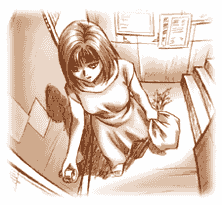
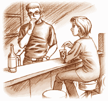

|
「久しぶり、ね」 店の奥から声が聞こえた。あたしはドアを開ける途中で立ち止まった。 聞き覚えのある大人の女性の声…。 あたしは誰か気づいていた。間違い無い。あのひとだ。 「やっと休暇をもらえたの」 細く開いたドアの隙間からカウンターが見えた－－－座っているのは思った通り梨絵さんだった。シックなスーツを着こなした姿は昔の印象と全く変わっていなかった。メタリックブルーの外車が停まっているのを見て、なんとなく梨絵さんじゃないかな？とは思ってたけど…。 「ついさっき、大学のキャンパスを歩いてみたの。ふふっ、懐かしいわね。なんだか昔のこと、いろいろ思い出しちゃった」 梨絵さんは頬杖をついて笑顔を見せた。薫は黙ってうつむいたまま煙草を吸っていた。なぜかはよくわからないけど不機嫌そうに見えた。なんでかな？ 「…相変わらず働きづめなのか？」 「そうよ。仕事中毒ってやつね。毎日が飛ぶように過ぎていくわ。何もかも、ね。こんなにゆっくりしたのは久しぶり。だから余計にどうやってすごせばいいのか戸惑っちゃったりするけど…」 そういうと梨絵さんはアイスカフェオレをストローで軽く混ぜた。 「…そういえば、真琴ちゃん、元気なの？」 心臓がどきんと鳴った。あたしはドアを少し閉じた。 「ああ、相変わらずだ。よくここを手伝ってくれる」 「ブルックリンで会ったんだけど、明、真琴ちゃんのこと心配してた。ほんのちょっとしか話せなかったけど、薫によろしくって」 「…ったく…。真琴のお守りをさせやがって…。兄妹そろって世話ばかり焼かせる」 「ふふっ。またそんなこと言って。明より薫の方が心配症じゃないの」 それを聞いて薫はそっぽを向くと煙を吐き出した。少しだけ照れているようにあたしには見えた。梨絵さんはカフェオレを一口飲んだ。  あたしが梨絵さんと最後に会ったのは、えーっと…確か四年くらい前だったかな？ 梨絵さんは薫－－－カフェリキッドのマスターであたしとは腐れ縁－－－の元の奥さんだ。薫より五歳年上だから…今年で三十二歳だと思う。 あたしが初めて出会った時の印象は『大人だな』って感じだった。 物腰や言動が自信に満ち溢れてるって感じで、けど嫌味な所も全然無くてすごくかっこ良かった。正直言って憧れちゃった。『あんな女性になりたいな』って。 それに比べると薫はまだまだコドモって雰囲気で、初めてあたしに梨絵さんを紹介してくれた時にやたらと照れていたのを覚えている。今じゃ絶対そんな表情見せてくれないけど。ふふっ。 薫が大学生の時にふたりは出会って学生結婚したんだけど、あたしのアニキが薫と高校の同級生で親友（本人たちは悪友だっていってるけど）だった縁もあって、あたしも梨絵さんと結構なかよくしてた。結婚式で見た梨絵さんの嬉しそうな顔、今でもよく覚えてる。あたしもアニキも他のみんなも心から祝福してた。でも…。 …どんな事情があったのかは知らないんだけど、薫と梨絵さんは結婚して２年で別れた。 さすがに本人にもアニキにも｢なんで？｣とは聞けなかったし、他のみんなもそのことには触れず終いだったから原因がなんだったのかはよくわからなかったんだけど…。 その後、薫の口から梨絵さんの話を聞いた覚えは無かった。だから、梨絵さんが今になってなんで薫の前に現れたのかあたしにはよく分からなかった。 …そういえばいま梨絵さんはアメリカで証券関係の仕事をしてるってアニキの手紙には書いてあったっけ。梨絵さんってすごく頭が良くて仕事ができるひとだから、今もニューヨークで颯爽と働いてるんだろうな。あたしはそんなことを考えながら薫と梨絵さんの会話にそっと聞き耳を立てた。 「ここは順調なの？」 「まあな。最近じゃすっかり高校生のたまり場なっちまったけどな」 「いいじゃない。お客さんが来てくれるだけ。あたし、お店閉めちゃったんじゃないかと思ってた。薫が喫茶店のマスターになるなんて想像も出来なかったから。…ふふっ。だって、あたしと住んでたころは台所にだって一度も立ったこと無かったでしょ？」 「相変わらず口が悪いな。ぜんぜん変ってない」 「お互いにね。ふふっ」 ふたりは初めて楽しそうに笑った。なんだか昔と変わらないな、とあたしは思った。 まるで恋人同士みたい。別れた夫婦にはぜんぜん見えなかった。 あたしの気持ちは、ほんのちょっとだけ、揺れた。梨絵さんはカウンター席を立ってレコード棚を眺めた。 「レコード、増えた？」 「ああ。店を始めてから千枚近くは買ったな」 「そういえば、昔、ふたりでレコードショップに行ったわね。薫は、あたしのことなんかほったらかしでレコード探してた。一時間や二時間は平気で。それでよく喧嘩になって…」 梨絵さんは無邪気に笑いながら言った。 「必死に謝る薫の表情、今思い出してもおかしいわ」 薫は肩をすくめた。 「いつも話してくれたわね。いつかこんなお店を持ちたいって。あたし、夢のことを話す薫が好きだった。そう、こんなＤＪブースの前に立つ薫の姿が目に浮かんでいたの…」  そう言うと梨絵さんはＤＪブースの前に立った。 カフェリキッドは昼間は喫茶店だけど、夜になると薫が自慢のレコードをかけてちょっとしたクラブみたいになる。かかる曲は古いジャズやラテン、ロックなんかで、最近は美大の学生のたまり場になっていた。 梨絵さんはターンテーブルに乗っているレコードを手に取った。 「これ…懐かしいわね。あたしが初めてプレゼントしたレコードじゃない」 それは薫がいつも気に入ってかけている古いジャズのレコードだった。 「ふふっ。かけてみてよ。あのころみたいに…」 薫はターンテーブルとミキサーの電源を入れるとレコードに針を落とした。 店内に流れるしっとりしたピアノの音…。 あたしもこの曲が大好きだった。そっか…ふたりの想い出の曲だったんだ…。 「なんだか、昔を思い出しちゃった。あの時の私たちってなんでも分かりあってて…」 「…昔の話は好きじゃない…」 薫はうつむいたままいった。 沈黙。 「そうね。もう過去には戻れない…」 長い沈黙。 「…ねえ、ひとつだけ…聞いていい？」 「ああ…」 「あたしさ…。いい奥さんじゃなかったよね…」 うつむいた梨絵さんの目に光る物が見えた気がした。 「…おれもいい旦那じゃなかったさ」 「そうね。お互い…。ごめん…いまさら話すことじゃないわね…」 「…どうした？ なにかあったのか？」 梨絵さんの動きが止まった。 「……………………わかる？｣ 「元の旦那だからな」 「そう…やっぱりね。薫にはバレると思ってた。昔からあたしの気持ちに関しては鋭いもんね…」 梨絵さんは涙を拭った。 「あたし…仕事で失敗しちゃったの。今までずっと自信を持ってやってきたんだけど、今回の件に関してはかなりこたえたわ…。それで精神的にまいっちゃって…。久しぶりに休暇をもらったの。気持ちを癒すために…」 梨絵さんは気持ちを素直に言葉にしていた。 「…とにかく帰ろうって思った。日本に帰ろうって。そうしたら急に薫の顔が見たくなって…。でも、こうやって薫の顔を見たらなんだかすごく気が楽になったわ…」 「梨絵…無理するなよ」 薫は初めて梨絵さんの名前を呼んだ。 「…ありがと…。そういってくれるのは薫だけよ」 そう言うと、梨絵さんは自分の手を薫の手に重ねた。 「ごめんね。長居しちゃって…」 「構わないさ」 「またいつか来るわ。じゃね」 「じゃあな」 その言葉を聞くとあたしは、その場を離れてリキッドの裏口に向かって歩いた。歩きながらあたしは思っていた。薫はまだ梨絵さんのことを忘れてないんだ…。そして、梨絵さんも…。 遠ざかる車のエンジン音が消えるまで、あたしはリキッドに入ることができなかった…。 十分ほど経ってからあたしはリキッドのドアを開けた。 カウンターには梨絵さんが飲み残したカフェオレのグラスが冷たく光っていた。それを見てあたしはぎこちなく聞いた。 「…お客さん、来てたの？」 「ああ、ちょっと…な」 薫はあたしの顔を見ずに応えた。 「そっか…」 あたしは、それを忘れるようにわざと勢いよくカウンターに買い物袋を置いた。 「さっきスーパーに行ったら安売りしてたから材料いっぱい買ってきちゃった。またケーキ作ってあげるよ。ふふっ。期待してよね」 「そうか。頼むぜ」 笑顔を見せた薫の顔を、なぜかまっすぐ見れなかったあたしは、そのまま振り向かずに冷蔵庫を開けると買ってきた物を詰めはじめた。 |
| ノベルに戻る |